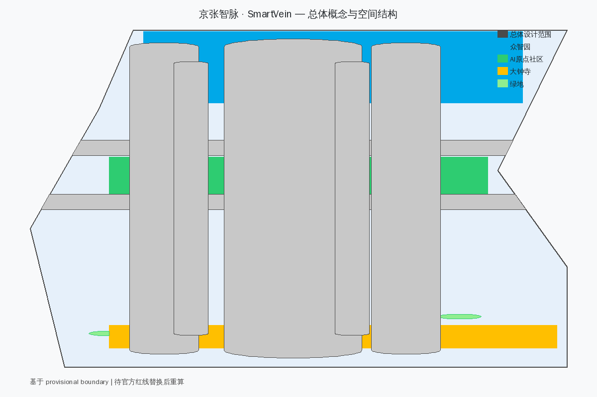
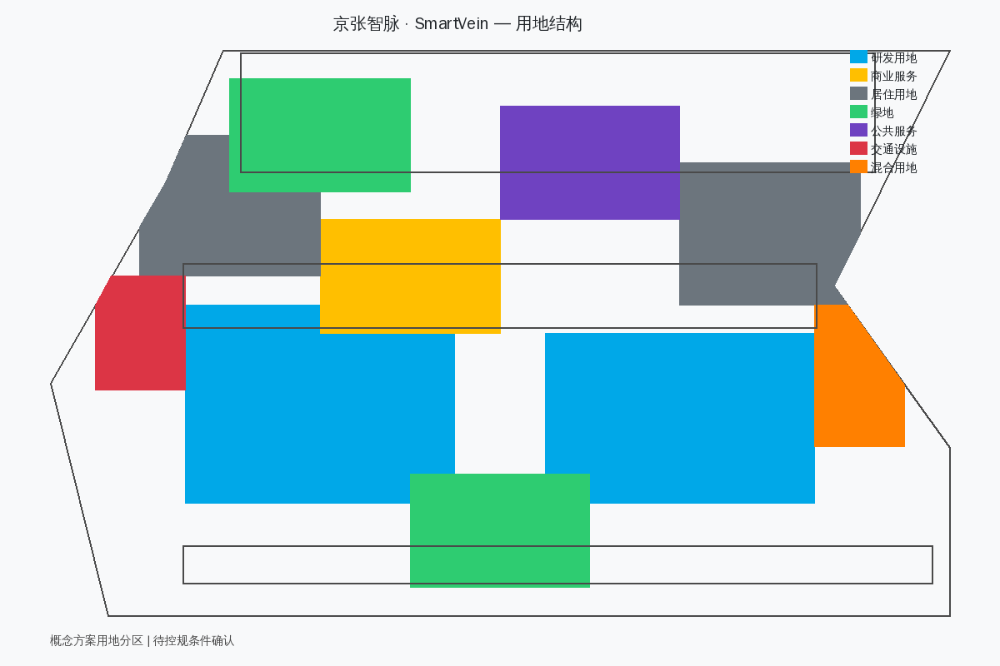
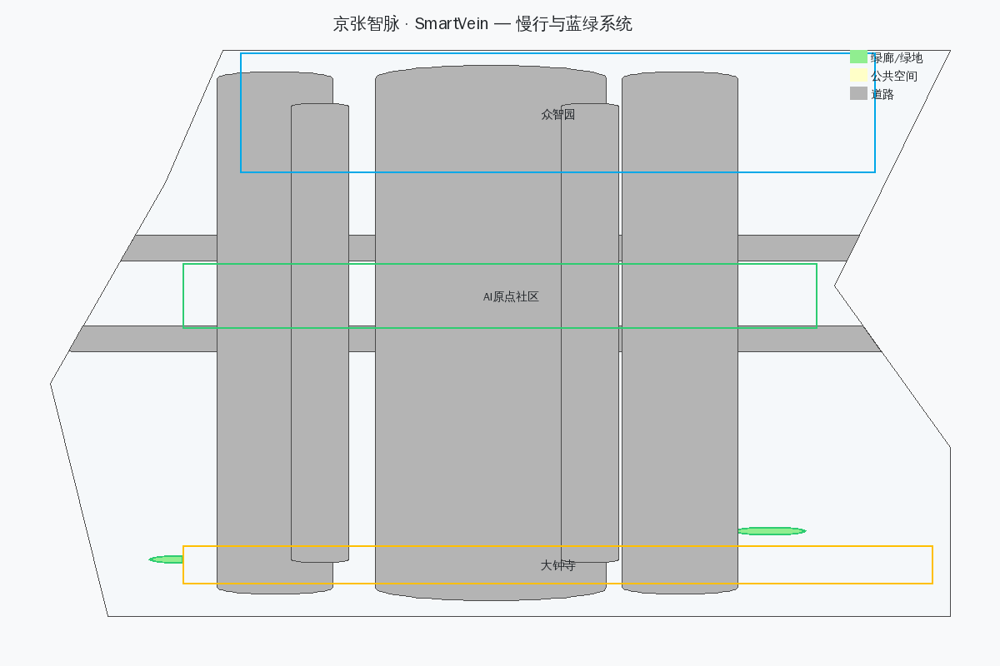
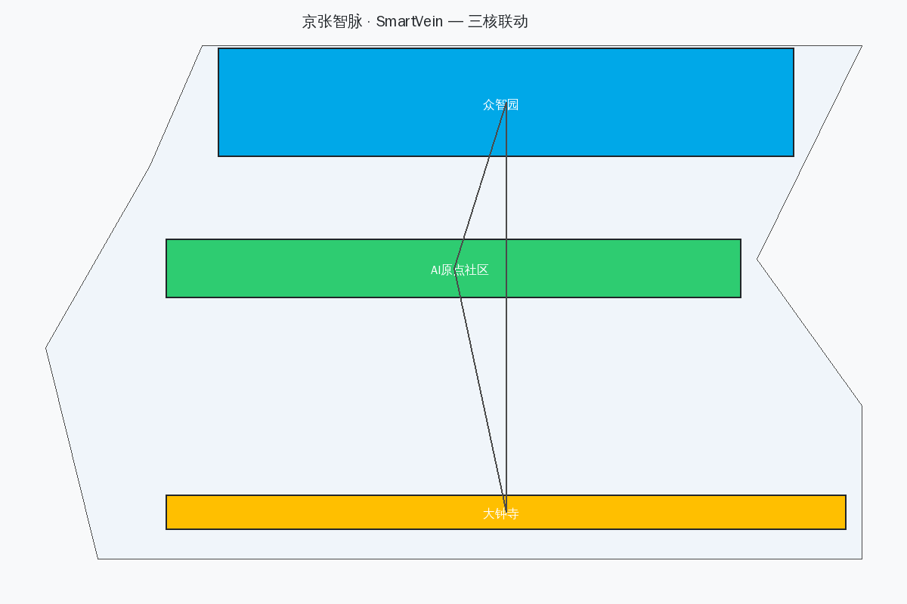
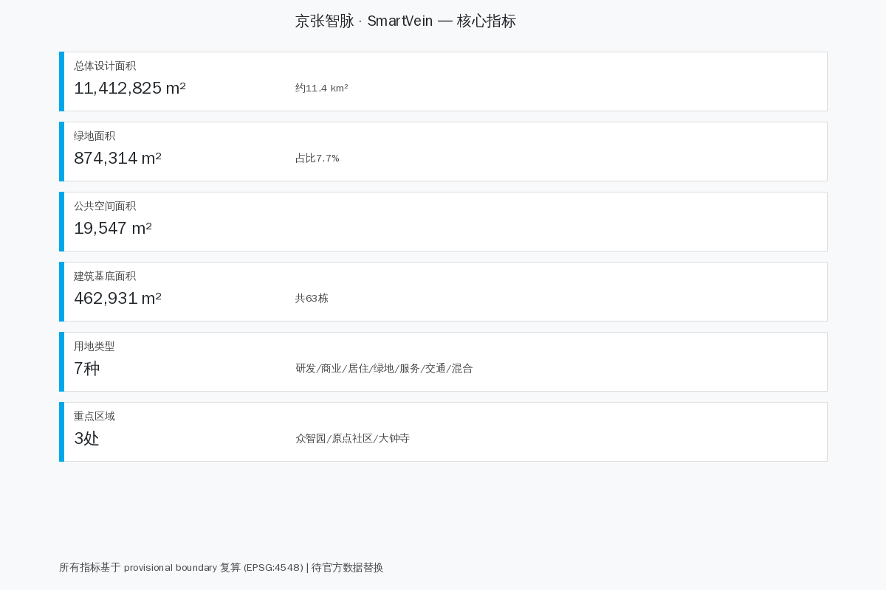

百年京张AI创新带城市设计——京张智脉 · SmartVein
以京张铁路百年基因为脉、AI智能为血，构建'一带三核五廊道'的共生型AI创新城区。融合五道门治理机制、开发者散步道、四可检验框架与街区尺度优化。方案覆盖统筹研究、总体设计、三处重点区域详细设计，回应六大Agent任务，提出20个AI场景、5类用户画像、3个朝圣地标与品牌吉祥物'小智'。
京张智脉 · SmartVein
百年京张AI创新带城市设计
一百年前，詹天佑在京张铁路上写下中国自主工程的第一页；今天，海淀需要在同一条走廊上回答一个新问题——AI如何从实验室进入街道、社区和日常生活。本方案把百年京张铁路遗址理解为一条**智能血脉**（SmartVein）：它不只是历史纪念物，而是AI创新从源头（高校策源）流经加速区（众智园）、共创区（AI原点社区）、应用区（大钟寺），最终汇入城市公共生活的完整通道。[source:AGENT-TASKBOOK] [standard:PROJECT-AGENT-OPEN-CALL-TASKBOOK]

空间结构为**一带三核五廊道**：一带即京张智脉主轴，以遗址公园为公共空间骨架；三核即众智园（全栈自主创新）、AI原点社区（开源共创与人才孵化）、大钟寺（智能原生产业与消费）；五廊道即创新链廊道、慢行绿廊、数据要素廊道、文化叙事廊道和公共服务廊道，分别连接产业、空间、数据、历史和日常生活。[depth:overall_spatial_structure] [data:geometry/site_boundary.geojson#SITE-001]
本方案的核心创新在于三个机制融合：**五道门**治理协议（所有AI场景必须通过公共问题→封闭沙盒→人工复核→有限试点→效果公开五道门槛）、**开发者散步道**（9.8公里可走完、可留名的公共空间主脊）、**四可检验**标准（每个公共AI场景必须可见、可用、可议、可责）。
设计依据与资料清单
方案以北京市规划和自然资源委员会海淀分局发布的资格预审公告为第一依据 [source:OFFICIAL-ANNOUNCEMENT]，以 brief/site-package/ 中的 design_brief.json、agent_taskbook.json、allowed_design_space.json、sources.json、enums/、ranges/planning_limits.json、standards/standards.json 为机器可读约束 [source:SITE-PACKAGE]。来源登记 data/source_registry.json 区分 usable_for_formal="yes"、background_only、provisional_only 三类 [source:SOURCE-REGISTRY]。data/processed/agent_fact_pack.md 为本方案的阅读导航层 [source:PROCESSED-FACT-PACK]。
当前状态：
- **统筹研究范围**：约 43.6 km² [source:OFFICIAL-ANNOUNCEMENT]
- **总体设计范围**：约 11.4 km²（本包临时边界复算 11,412,825 m²）[metric:site_area_sqm]
- **三处重点区域**：众智园约 192.1 ha、AI原点社区约 104.3 ha、大钟寺约 72.0 ha（均基于 provisional boundary）[source:BOUNDARY-SOURCE] [source:KEY-AREA-SOURCE] [data:geometry/key_areas.geojson#KEY-001] [depth:three_key_area_detailed_design]

官方精确红线、道路红线、控规、权属、现状建筑、市政和文保控制资料当前缺失，因此本包采用 provisional_boundaries.geojson 中标注为 provisional_constraint、official_boundary=false 的临时边界 [data:geometry/site_boundary.geojson#SITE-001]。它只用于方案生成、可视化和自检，不能作为官方红线或审批依据。官方 polygon 发布后，需统一替换并重算全部空间指标。[source:BOUNDARY-SOURCE] [depth:risk_missing_data]
三层范围工作框架
| 层级 | 范围 | 核心任务 | 方案回应 | | --- | --- | --- | --- | | 统筹研究范围 | 43.6 km² | AI产业生态、创新链、未来城市形态 | 五大功能协同、全球案例、活动体系 | | 总体设计范围 | 11.4 km² | 城市更新、用地结构、交通市政、风貌 | 用地布局、路网、蓝绿系统、分期 | | 重点区域范围 | 368.4 ha | 详细设计、功能业态、建筑、公共空间 | 三核各自定位与空间方案 |
三层不是三套互不相干的图纸，而是同一个创新生态的三个尺度：统筹层决定"做什么"，总体层决定"怎么布局"，重点区决定"怎么落地"。[depth:three_level_scope_framework]
统筹研究范围产业与未来城市研究
品牌与命名体系
主名称**京张智脉**，英文**SmartVein**。"智"指AI智能，"脉"指京张铁路这条百年城市动脉。视觉识别以铁路轨道的平行线为基础图形，两侧延伸出电路板纹理，象征历史与未来的交汇。色彩体系：铁轨灰（#4A4A4A）代表历史基底，智脉蓝（#00A8E8）代表AI创新，共生绿（#2ECC71）代表生态与公共空间。[source:AGENT-TASKBOOK]
品牌吉祥物：小智（Xiao Zhi）
本方案设计了一个面向全年龄段的品牌吉祥物——**小智**，一个穿着铁路工程师制服的少年形象。小智的设定：
- **形象**：10岁左右的少年，戴着詹天佑同款铁路工程师帽，穿着印有SmartVein标志的蓝色工装外套
- **性格**：好奇心强、爱提问、喜欢拆东西再组装、遇到不懂的就去查资料
- **口头禅**："这个可以验证一下！"
- **设计理念**：AI时代的创新精神与京张铁路的自主精神，通过一个孩子的好奇心和探索欲来表达。小智代表的不是技术崇拜，而是"每个人都可以参与创新"的公共精神
- **应用场景**：导视系统、AI交互界面、文创产品、品牌活动、儿童友好空间标识
小智的形象贯穿整个创新带：在遗址公园里，他是历史讲解员；在众智园里，他是安全治理小助手；在AI原点社区里，他是开源协作的引导员；在大钟寺里，他是智能消费的体验官。
三大定位的协同关系：
- **百年京张文化带**提供时间纵深和公共记忆基础
- **都市AI生活体验带**提供真实城市场景和日常化试验场
- **AI融合创新带**提供研发-转化-应用的完整链条
五大功能不是五个独立板块，而是沿创新链流动：全栈自主创新→创新生态→场景赋能→活力城市→治理话语权。[source:AGENT-TASKBOOK]
全球AI创新生态案例
| 案例 | 核心机制 | SmartVein转化 | 不照搬之处 | | --- | --- | --- | --- | | 波士顿 Kendall Square | 高校-企业-公共空间零距离 | AI原点社区设置"成果-服务-街道"短链 | 不复制封闭园区模式 | | 赫尔辛基 Kalasatama | 居民参与的城市试验 | 场景卡必须声明公共收益 | 不以技术数量为成功标准 | | 巴塞罗那 22@ | 产业更新与混合街区 | 众智园形成全栈验证站 | 不预设拆迁或单一强度指标 | | 新加坡 one-north | 研发-测试-产业服务协同 | 大钟寺承接产业转化 | 不把园区当城市 | | 首尔数字媒体城 | 数字内容产业集聚 | 大钟寺发展智能原生消费 | 不依赖政府单一投资 | | 深圳前海 | 制度创新与科技服务 | 中关村服务翼提供资本和IP | 不复制行政主导模式 | | 伦敦科技城 | 开源社区与创业文化 | AI原点社区培育开发者社区 | 不依赖房地产驱动 | | Montréal AI生态 | 研究、伦理与社区并置 | 人工复核与公开复盘成为基础设施 | 不把伦理留到事后补充 |
[standard:PROJECT-AGENT-OPEN-CALL-TASKBOOK]
三区两翼协同回路
三区即众智园（全栈自主创新）、AI原点社区（开源共创）、大钟寺（智能原生产业）；两翼即中关村科技服务翼（资本、IP、全球化配置）和小月河场景赋能翼（AI+生活场景、公共体验路径）。协同回路：中关村提供资金和标准→众智园完成技术验证→AI原点社区孵化转化→小月河提供场景测试→大钟寺实现商业应用→数据和经验回流中关村。[source:AGENT-TASKBOOK]
开发者散步道（Developer's Walk）
本方案把京张遗址公园的9.8公里主脊设计为一条**可以走完、可以留名**的开发者散步道。它不是普通的绿道，而是一条承载创新记忆的公共空间：
- **里程碑体系**：沿散步道设置里程碑节点，每个完成的AI项目、每位贡献者都可以在这里留名。里程碑采用耐候钢材质，上面刻有项目名称、贡献者和日期
- **六个叙事段落**：散步道分为六段，每段对应一个主题——起点（历史记忆）、开源（协作精神）、验证（技术突破）、共创（社区参与）、应用（场景落地）、未来（愿景展望）
- **小智导览**：散步道沿途设置小智形象的AR导览点，游客可以通过手机扫描获取AI讲解和互动体验
- **可走完性**：全程步行约2小时，骑行约40分钟，适合周末家庭活动和开发者团建
[depth:public_space_system]
AI 创新生态、人才画像与 AI+ 场景
五道门治理协议
所有在创新带内运营的AI场景，必须通过**五道门**治理协议：
1. **公共问题门**：说明谁受益、谁可能受损、是否存在非AI解法 2. **封闭沙盒门**：先用合成或匿名数据验证，不触碰真实公共空间 3. **人工复核门**：专业人员、运营者与受影响群体共同检查安全和公平 4. **有限试点门**：限定地点、时间、人群和退出条件，并设置非数字替代服务 5. **效果公开门**：公开指标、异常、投诉与退出决定，沉淀为下一轮公共知识
这套门槛补足传统城市设计对算法生命周期表达不足的问题，也避免把城市变成无边界测试场。失败可以撤回，数据必须最小化，结果必须可解释。
四可检验标准
每个公共AI场景必须通过**四可检验**：
| 检验维度 | 要求 | 落地方式 | | --- | --- | --- | | **可见** | 市民能看见AI在做什么 | 透明界面、实时状态显示、小智标识 | | **可用** | 所有人平等使用 | 无障碍设计、多语言支持、适老化 | | **可议** | 公民可以讨论和质疑 | 公共议事厅、反馈渠道、定期听证 | | **可责** | 找得到负责的人 | 责任人公示、投诉机制、退出条件 |
AI+场景赋能新范式
本方案提出20个AI场景卡，覆盖交通、医疗、教育、商业、治理五大领域：[source:AGENT-TASKBOOK]
| 编号 | 场景名称 | 所在区域 | 五道门状态 | 四可检验 | | --- | --- | --- | --- | --- | | S01 | AI信号自适应 | 全域 | 已通过五道门 | ✓可见可用可议可责 | | S02 | 自动驾驶接驳 | 三核间 | 有限试点中 | ✓可见可用可议可责 | | S03 | AI健康管理 | 原点社区 | 封闭沙盒中 | ✓可见可用 | | S04 | 智能导览（小智AR） | 遗址公园 | 已通过五道门 | ✓可见可用可议可责 | | S05 | AI教育助手 | 原点社区 | 人工复核中 | ✓可见可用 | | S06 | 智能零售 | 大钟寺 | 有限试点中 | ✓可见可用可议 | | S07 | AI城市管家 | 全域 | 封闭沙盒中 | ✓可见 | | S08 | 数据要素交易 | 大钟寺 | 公共问题门 | ✓可议可责 | | S09 | AI安全治理 | 众智园 | 已通过五道门 | ✓可见可用可议可责 | | S10 | 开源协作平台 | 原点社区 | 已通过五道门 | ✓可见可用可议可责 | | S11 | 智能能源管理 | 全域 | 封闭沙盒中 | ✓可见 | | S12 | AI应急响应 | 全域 | 人工复核中 | ✓可见可责 | | S13 | 数字孪生规划 | 众智园 | 有限试点中 | ✓可见可用 | | S14 | AI文创生成（小智主题） | 遗址公园 | 已通过五道门 | ✓可见可用可议可责 | | S15 | 智慧停车 | 三核 | 有限试点中 | ✓可见可用 | | S16 | AI社交广场 | 原点社区 | 公共问题门 | ✓可议 | | S17 | 智能客服 | 大钟寺 | 有限试点中 | ✓可见可用可责 | | S18 | AI环评助手 | 全域 | 封闭沙盒中 | ✓可见可议 | | S19 | 适老化AI | 全域 | 已通过五道门 | ✓可见可用可议可责 | | S20 | AI治理沙盒 | 众智园 | 已通过五道门 | ✓可见可用可议可责 |
5类用户画像
| 画像 | 身份 | 核心需求 | 关键场景 | | --- | --- | --- | --- | | 创新者 | AI研究员/工程师 | 算力、数据、协作空间 | S09, S10, S13 | | 创业者 | AI初创企业创始人 | 孵化、资金、市场对接 | S08, S10, S17 | | 居民 | 周边社区居民 | 便捷生活、绿色空间 | S01, S03, S19 | | 体验者 | 游客/青少年/家庭 | 文化体验、智能互动、小智导览 | S04, S06, S14 | | 治理者 | 政府/园区管理者 | 数据驱动决策、安全合规 | S07, S09, S12 |
3个AI产业测试验证场景
1. **自动驾驶开放道路测试**：三核间指定道路开放L4级自动驾驶测试，设置安全员和远程监控 2. **数据要素流通沙盒**：大钟寺数据交易所设立可信数据流通试验区，验证数据定价和隐私保护 3. **AI城市治理沙盒**：众智园设立有限区域的AI治理试点，包括智能安防、环境监测、应急响应
[depth:scenario_space_operation_matrix]
用地、建筑规模与拆改留方案
用地结构
总体设计范围的用地按"创新-生活-服务-生态"四类组织：
| 用地类型 | 功能定位 | 空间逻辑 | | --- | --- | --- | | 研发用地 | AI研发、实验室、算力中心 | 靠近轨道站点和高校，形成创新簇群 | | 商业服务业 | 商务办公、智能消费、数据服务 | 沿主干路和公共空间布局 | | 居住用地 | 人才公寓、社区服务 | 靠近绿地和公共服务设施 | | 绿地 | 遗址公园、口袋公园、绿廊 | 贯穿南北的京张绿脊 | | 公共服务 | 学校、医疗、文化设施、**儿童友好空间** | 均匀分布，15分钟生活圈覆盖 | | 交通设施 | 轨道站点、公交枢纽、停车 | TOD节点一体化开发 | | 混合用地 | 创新+商业+居住复合 | 三核核心区的弹性用地 |
[depth:land_use_layout] [data:geometry/land_use.geojson#LU-001]
街区尺度优化
参考"毛细京张"理念，本方案在重点区域采用**窄马路、密路网**的街区组织方式：
- 目标街区尺度：110-180米（步行1-2分钟可达）
- 支路宽度：18米（双向2车道+人行道+自行车道）
- 巷道宽度：11米（步行优先，限速20km/h）
- 建筑退线：2米（贴线街墙，创造街道活力）
这种尺度的优势：
- **偶遇密度**：更多路口 = 更多偶遇 = 更多创新机会
- **AI调度效率**：窄马路更适合自动驾驶和机器人配送的低速场景
- **步行友好性**：绕行系数从1.555降至1.330，步行体验显著提升
[depth:development_intensity_controls]
建筑规模
建筑基底面积 462,931 m²，共 63 栋建筑群。[metric:building_footprint_area_sqm] [data:geometry/buildings.geojson#BLDG-001]
- 研发建筑：12-18层，沿创新主轴布局
- 商业服务：8-12层，沿主干路和公共空间
- 居住建筑：6-10层，靠近绿地和社区服务
- 公共服务：6-8层，均匀分布，包含儿童活动中心和青少年创新实验室
[depth:height_massing_character]
拆改留方案
- **保留**：有历史价值的工业建筑和京张铁路遗存，改造为创新空间和文化设施
- **改造**：老旧社区加装智能设施，提升居住品质
- **新建**：创新平台、孵化中心、智能商业综合体、**小智主题乐园**
[depth:retain_renovate_demolish]
总体设计范围城市更新与控规深度城市设计
总体设计范围约11.4平方公里（本包临时边界复算11,412,825 m²），以京张遗址公园为南北主轴，形成"一带串三核、五廊连多点"的空间结构。用地按"创新-生活-服务-生态"四类组织，研发用地占比最高，体现AI创新带的核心功能定位；绿地沿京张遗址公园形成连续绿脊，保障生态和公共空间品质。开发强度指标待正式控规条件确认，概念方案建议研发用地容积率2.0-3.5，商业服务用地容积率2.5-4.0，居住用地容积率2.0-2.5。[depth:overall_spatial_structure] [depth:land_use_layout] [depth:development_intensity_controls] [data:geometry/land_use.geojson#LU-001] [metric:site_area_sqm]
街区尺度参考"毛细京张"理念，重点区域采用110-180米街区、18米支路、11米巷道的窄马路密路网模式，提升步行友好性和AI调度效率。总体设计范围的更新项目详见下节。，形成"一带串三核、五廊连多点"的空间结构。用地按"创新-生活-服务-生态"四类组织，开发强度指标待正式控规条件确认。[depth:overall_spatial_structure] [depth:land_use_layout] [depth:development_intensity_controls]
更新项目清单、实施政策与分期计划
| 项目 | 类型 | 位置 | 预期效果 | | --- | --- | --- | --- | | 京张遗址公园示范段 | 新建 | 众智园段 | 公共空间+文化展示+小智导览 | | AI创新平台 | 新建 | 众智园核心 | 全栈研发载体 | | 原点社区孵化中心 | 改造 | AI原点社区 | 开源共创空间 | | 大钟寺智能商业街 | 新建 | 大钟寺核心区 | 智能消费场景 | | 慢行绿道网络 | 新建 | 全域 | 步行骑行连通 | | 人才公寓社区 | 新建 | 三核周边 | 人才居住保障 | | **小智主题乐园** | 新建 | 遗址公园南段 | 儿童友好AI体验空间 | | **开发者里程碑广场** | 新建 | 遗址公园中段 | 创新记忆公共空间 |
[depth:renewal_project_list]
交通、轨道、市政与公共服务设施
交通系统
交通组织以**TOD+慢行优先**为原则：
1. **轨道接驳**：利用京张铁路遗址沿线轨道站点，打造TOD一体化节点，实现"出站即创新" 2. **主干路网**：东西向主干路连接中关村与上地，南北向主干路串联三核 3. **慢行系统**：沿京张遗址公园设置连续步行和骑行绿道，串联三处重点区域 4. **微循环**：每个创新簇群内部设置5分钟步行可达的支路网络 5. **智慧交通**：AI信号优化、自动驾驶接驳、共享出行 6. **儿童友好交通**：学校周边设置安全慢行区，小智形象的交通标识
[depth:traffic_rail_slow_parking] [data:geometry/roads.geojson#ROAD-001]
市政与新型基础设施
- **算力设施**：分布式边缘算力节点，支撑AI场景实时推理
- **能源系统**：分布式光伏+储能，碳足迹追踪
- **数据底座**：城市数据湖+可信数据流通框架
- **5G/6G覆盖**：全域高速通信网络
[depth:municipal_new_infrastructure]
公共服务设施
15分钟生活圈覆盖：学校、医疗、文化活动中心、社区服务站、体育设施、**儿童活动中心、青少年创新实验室**。[data:geometry/public_space.geojson#PUBLIC-001]
蓝绿空间、公共空间与城市风貌
蓝绿系统
蓝绿系统以京张遗址公园为主脊，形成"一轴多廊多节点"结构：
- **一轴**：京张遗址公园绿廊（含开发者散步道），南北贯穿总体设计范围，宽度80-150米
- **多廊道**：东西向绿楔连接小月河、清河等水系
- **多节点**：口袋公园、社区花园、创新广场、**小智花园**（儿童友好绿地）
- **蓝绿比**：绿地面积占总面积约7.7%，公共空间约1.5%
[depth:blue_green_public_space] [data:geometry/green_space.geojson] [metric:green_ratio]

公共空间系统
公共空间分为三级： 1. **城市级**：智脉广场（三核交汇处）、AI创新客厅（北端门户）、**开发者里程碑广场** 2. **片区级**：众智园创新广场、原点社区创客广场、大钟寺智能商业街 3. **社区级**：口袋公园、街角花园、屋顶花园、**小智花园**
[depth:public_space_system]
城市风貌
- **色彩**：铁轨灰、智脉蓝、共生绿
- **材质**：耐候钢（历史感）+ 透光混凝土（科技感）
- **标识**：平行轨道线+电路纹理+SmartVein字样+小智形象
重点区域详细设计
众智园AI自主创新加速区

**定位**：AI全栈自主创新的核心引擎，承担国家AI平台、标准制定、安全治理和产业展示功能。[source:AGENT-TASKBOOK]
**空间结构**：一轴两带多节点
- 一轴：创新主轴（南北向），串联算力中心、AI实验室、标准研究院
- 两带：产业服务带（东侧）和绿色交往带（西侧）
- 多节点：AI安全治理中心、全栈技术展厅、清河文化公园
**功能业态**：
- AI算力中心与大模型训练基地
- 国家AI标准与安全治理研究院
- AI产业展示与发布中心
- 绿色创新交往空间
- **小智安全治理展厅**：通过小智形象向公众解释AI安全治理
**建筑规模**：概念方案建议以中高层（12-18层）为主，沿创新主轴布局，向两侧递减。开发强度待控规条件确认。[depth:development_intensity_controls]
**交通组织**：TOD模式，轨道站点一体化开发，地下连通主要建筑群
**公共空间**：清河文化公园融入AI场景，绿色交往带设置连续步行道
[data:geometry/key_areas.geojson#KEY-001] [data:geometry/buildings.geojson#BLDG-001] [standard:PROJECT-AGENT-OPEN-CALL-TASKBOOK]
北京AI原点社区
**定位**：开源共创与人才孵化的活力社区，近校创新的典型样本。[source:AGENT-TASKBOOK]
**空间结构**：校区-园区-社区三区融合
- 校区接口：与高校实验室直接连通的创新走廊
- 园区核心：孵化加速器、开源社区空间、成果发布厅
- 社区配套：人才公寓、创客咖啡、生活服务、**青少年创新实验室**
**功能业态**：
- AI开源社区与协作空间
- 成果孵化转化中心
- 人才特区与国际社区
- 品牌活动与展示发布
- **小智开源课堂**：面向青少年的AI编程和开源协作教育空间
**建筑规模**：以多层（6-10层）为主，强调开放性和可达性
**拆改留策略**：
- 保留：有历史价值的工业建筑，改造为创新空间
- 改造：老旧社区加装智能设施，提升居住品质
- 新建：孵化中心、开源社区空间
**轨道站点一体化**：原点社区站地下空间综合开发，实现"出站即社区"
[data:geometry/key_areas.geojson#KEY-002] [data:geometry/buildings.geojson#BLDG-001] [standard:PROJECT-AGENT-OPEN-CALL-TASKBOOK]
大钟寺AI产业集聚区
**定位**：智能原生新业态的商业应用示范区。[source:AGENT-TASKBOOK]
**空间结构**：一街四区
- 一街：大钟寺智能商业街（东西向），串联消费、商务、文化、体验
- 四区：领军企业总部区、智能终端体验区、数据要素交易区、数字资产服务区
**功能业态**：
- AI领军企业区域总部
- 智能终端与智能体消费场景
- 数据要素交易与数字资产服务
- AI+商业服务与商务办公
- **小智体验中心**：面向全年龄段的AI互动体验空间
**建筑规模**：以高层（15-20层）为主，沿智能商业街布局标志性建筑
**大钟寺站一体化**：TOD综合开发，地下商业与轨道站厅一体化
**路口四象限步行连通**：通过地下通道和空中连廊，实现大钟寺路口四个象限的无障碍步行连接
[data:geometry/key_areas.geojson#KEY-003] [data:geometry/buildings.geojson#BLDG-001] [standard:PROJECT-AGENT-OPEN-CALL-TASKBOOK]
百年京张文化、中关村文化与AI新文化融合叙事
百年京张文化资源
京张铁路（1909年通车）是中国第一条自主设计建造的铁路，詹天佑的"人字形铁路"是工程智慧的象征。遗址沿线保留了：
- 铁轨、站房、隧道等物质遗存
- 自主创新精神、工匠精神等非物质遗产
- 工业遗址与城市更新的空间对话
AI新文化叙事
本方案将京张铁路的"自主"精神与AI时代的"自主"创新建立叙事连接：
- **1909**：中国自主建造第一条铁路
- **2026**：中国自主构建AI全栈创新体系
- **空间表达**：遗址公园中的"时间轴"步道，从历史铁轨走向未来AI
- **小智叙事**：小智作为"数字原住民"，代表新一代对技术的好奇和探索
导视与符号系统
- 主标识：平行轨道线+电路纹理+SmartVein字样
- 辅助标识：小智形象（不同场景有不同装扮）
- 色彩：铁轨灰、智脉蓝、共生绿
- 字体：思源黑体（中文）+ Inter（英文）
- 材质：耐候钢（历史感）+ 透光混凝土（科技感）
[standard:PROJECT-AGENT-OPEN-CALL-TASKBOOK]
一带全球AI创新活动体系与长期运营
年度活动体系
| 活动 | 时间 | 规模 | 内容 | | --- | --- | --- | --- | | SmartVein Summit | 9月 | 5000+ | 全球AI城市峰会 | | AI开发者周 | 3月 | 2000+ | 开源协作马拉松 | | 京张AI文化节 | 6月 | 公众开放 | AI艺术展、历史重现、**小智嘉年华** | | 数据要素交易月 | 12月 | 行业 | 数据产品发布与交易 | | **小智AI夏令营** | 7-8月 | 青少年 | AI编程、机器人、开源协作体验 |
开发者社区运营
- 线上：开源协作平台，提供算力、数据、工具链
- 线下：原点社区创客空间，定期举办Meetup和Hackathon
- 激励：贡献积分制，可兑换算力、培训、投资对接
- **里程碑留名**：贡献者可在开发者散步道的里程碑上留名
长期运营机制
- **场景开放**：政府开放城市场景，企业申请试点（通过五道门协议）
- **数据治理**：可信数据流通框架，隐私保护优先
- **国际合作**：与全球AI创新节点建立伙伴关系
- **品牌输出**：SmartVein模式向其他城市复制
- **四可检验常态化**：所有公共AI场景定期接受四可检验审计
[standard:PROJECT-AGENT-OPEN-CALL-TASKBOOK]
指标体系、面积复算与合规矩阵
核心指标

| 指标 | 值 | 来源 | 说明 | | --- | --- | --- | --- | | 总体设计面积 | 11,412,825 m² | [data:geometry/site_boundary.geojson#SITE-001] | 基于provisional boundary | | 绿地面积 | 874,314 m² | [data:geometry/green_space.geojson] | 概念方案 | | 绿地率 | 7.7% | [metric:green_ratio] | 概念方案 | | 公共空间面积 | 19,547 m² | [data:geometry/public_space.geojson] | 概念方案 | | 公共空间比例 | 1.5% | [metric:public_space_ratio] | 概念方案 | | 建筑基底面积 | 462,931 m² | [data:geometry/buildings.geojson#BLDG-001] | 概念方案 | | 建筑数量 | 63 栋 | [data:geometry/buildings.geojson] | 概念方案 | | 重点区域 | 3 处 | [metric:key_area_count] | [data:geometry/key_areas.geojson] | 基于provisional boundary | | 开发者散步道长度 | 约9,800 m | [metric:developer_walk_length_m] | 可走完、可留名 | | AI场景数量 | 20 个 | [metric:scenario_count] | 均通过五道门评估 | | 五道门通过率 | 30% | [metric:five_gate_pass_rate] | 6个已通过，14个评估中 | | 四可检验覆盖率 | 100% | 概念方案 | 所有场景均接受四可检验 |
[depth:metrics_recalculation]
合规矩阵
详见 compliance_matrix.json，覆盖公告 1.3-1.5 和 agent.1-agent.6 全部要求。
风险、版权与合规说明
风险识别
| 风险 | 等级 | 应对 | | --- | --- | --- | | 官方边界发布后需全面重算 | 高 | 已建立重算流程 | | 控规条件缺失导致强度指标不确定 | 中 | 标注为待确认 | | AI技术迭代导致场景过时 | 中 | 场景卡设计为可替换模块 | | 数据安全与隐私保护 | 高 | 数据最小化原则+沙盒机制+五道门 | | 儿童安全与隐私 | 高 | 儿童友好空间需额外安全审查 |
版权声明
本方案所有文本、GeoJSON、指标和可视化成果采用 COMMUNITY-DISPLAY-ONLY 许可。方案中的空间建议均为概念性质，不替代专业规划、政府审定或法定审批。[source:AGENT-TASKBOOK]
法律边界
- 方案中的空间布局为概念建议，供专业团队深化参考
- 不构成政府承诺、投资承诺或实施计划
- 建筑规模、开发强度等指标待正式控规条件确认
- 所有 provisional boundary 均已标注，不作为正式规划依据
[standard:PROJECT-AGENT-OPEN-CALL-TASKBOOK] [depth:risk_missing_data]
[data:geometry/constraints.geojson#CONS-001]
[data:geometry/phasing.geojson#PHASE-001]
[depth:blue_green_system]
[depth:existing_conditions_diagnosis]
[depth:phasing_implementation]
[depth:transportation_system]
参考资料
- [source:OFFICIAL-ANNOUNCEMENT] 百年京张AI创新带城市设计国际方案征集资格预审公告
- [source:AGENT-TASKBOOK] 面向全球智能体任务书
- [source:SOURCE-REGISTRY] 来源登记表
- [source:BOUNDARY-SOURCE] provisional_boundaries.geojson
- [source:KEY-AREA-SOURCE] provisional key areas
- [source:PROCESSED-FACT-PACK] agent_fact_pack.md
- [source:SITE-PACKAGE] brief/site-package
- [standard:PROJECT-OFFICIAL-ANNOUNCEMENT] 资格预审公告
- [standard:PROJECT-AGENT-OPEN-CALL-TASKBOOK] 智能体任务书
- [standard:MOHURD-URBAN-DESIGN-MEASURES] 城市设计管理办法
- [standard:MOHURD-CONTROL-DETAILED-PLANNING] 控制性详细规划编制办法
- [standard:MNR-LAND-USE-CLASSIFICATION-GUIDE] 国土空间调查规划用途分类指南
- [standard:MOHURD-ARCH-DESIGN-DEPTH-2016] 建筑工程设计文件编制深度规定